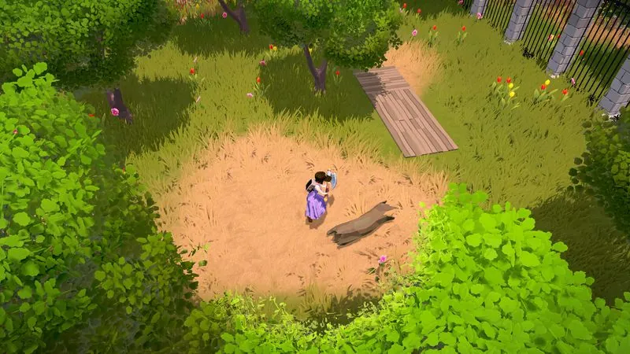

The Ranchers Beginner's Guide: Your First Week on the Ranch

Before starting: version, mode, and transport
Check the build number first. Version 0.8.10.455 is the official launch-hotfix baseline. Solo can run with Steam Offline Mode; co-op still needs Steam sign-in and internet.
Follow the opening questline. It introduces the ranch, first fields, seed buying, early home crafting, villagers, shops, and driving. First-use tutorials appear when you attempt a new mechanic.
Learn transport before expanding. Sunvale currently has 15 subway stations. Roped or attached animals can travel with you, and selected quest drives can be skipped with passengers and animals included.
Protect your vehicle. Park at your ranch or one of 17 Overnight Parking locations. Otherwise it may be impounded. My Garage can send damaged or stuck vehicles to a mechanic and route them back through a Car Pound.
Your first 7 days: a day-by-day roadmap
The opening should establish orientation and a maintainable routine. The sequence below is editorial advice built around current official systems, not a claim that one crop or purchase has already been mathematically solved.
Day 1 — Scout, don't spend
Follow the main quest until the ranch, driving, shops, and first-use tutorials are clear. Mark the nearest subway and legal overnight parking. Delay large purchases until you understand the route between ranch and town.
Day 2 — Plant your first money loop
Use a small plot to learn the current plantation loop. Record the seed cost, planting day, harvest day, yield, quality, and sale channel. The official notes confirm that unharvested produce remains and recurring crops have a regrow flow.
Day 3 — Follow the quest threads
Continue the main quest and first-use tutorials. Failed quests can be replayed with state resets, so learning a mechanic is safer than abandoning the questline to chase an assumed optimal route.
Day 4 — Start a second skill
Explore one secondary activity that is available in your current build, but do not plan around roadmap systems. The developer lists mines, combat, monsters, wildlife, and hunting as future content rather than launch features.
Day 5 — First harvest, first reinvestment
When the first crop is ready, record its yield, quality and available sale values before deciding what to keep. Protect the exact cost of repeating the crop cycle; use only the surplus for expansion or experiments.
Day 6 — Expand the plot, meet the town
Clear and till a second field only if the first remains manageable. In the afternoon, make a deliberate town loop: check the daily orders and local markets, note who sells what, and record useful routes. Do not assume gifts, discounts or relationship rewards until the current build shows them.
Day 7 — Plan your first animal purchase
End the week by doing math, not shopping. Check what your crops actually earned per day in your save. Before buying an animal, record its housing, feed and tool requirements; delay the purchase if those costs are still unknown.
Opening quest chains (video-observed)
The quest steps below were read directly off the screen of a public playthrough of the current build (Games Station, V0.8.10.455, Spring Year 1 Days 4–8) Video-observed. Day numbers mark when each chain was active in that single playthrough — your own pacing can differ.
Feathered Foes — active on Day 4
Objective: craft 1 scarecrow. Scarecrow recipes live in the workbench crafting menu (see the building guide).
Rust to Rumbling! — active on Day 5
- Save at least 3,000C in your bank.
- Repair Victor's old car.
- Take a bike from a Bykii terminal in the meantime.
- Pick up your new car.
Power to the Bench — active on Day 8
- Have at least 1,000C in your bank.
- Visit City Hall.
- Sign an electricity contract with Victor.
- Build a workbench in your ranch (the build runs in 5 steps).
- Check your ranch's energy usage.
Who is Victor? City Hall dialogue identifies him as "Victor, Sunvale's Mayor" Video-observed, and his NPC profile shows a 5-heart friendship bar. The electricity contract in Power to the Bench is signed with him at City Hall — see the electricity & water guide.
Two more video-observed mechanic clues
- Tutorials arrive by phone. Meriam coaches the workbench flow through a phone call — gather the basic materials first, then place the workbench Video-observed Games Station, 30:55. Answer your phone; tutorial guidance is pushed to you there, not only through quest markers.
- Heavy labor drains health, not just time. In the same playthrough, a Day-7 woodcutting session dropped the player to 40/80 health and began deducting health Video-observed. The exact threshold and drain rate are unobserved — treat long gathering sessions as a health-cost activity and carry food (the observed Green Salad restores 20 health / 30 energy).
Resource priorities: what matters first
With limited money, energy, and daylight, the order you invest in things matters more than the things themselves. Our recommended priority stack for the first month:
- Time-saving infrastructure. Anything that reduces walking, watering, or inventory trips pays for itself every single day. A well-placed chest or a closer field layout is worth more than a shinier tool.
- Seed capital. Money that becomes more money within one crop cycle outranks everything except survival purchases.
- Tool upgrades. Compare the displayed or observed effect before buying. Prioritize an upgrade only when it removes a real daily bottleneck.
- Animals. Only once crops cover upkeep with margin.
- Decorations and cosmetics. Last. Always last.
Known gameplay systems, explained
Official material establishes the broad pillars below. Practical suggestions are editorial advice; exact energy costs, crop restrictions, upgrade effects and relationship rewards require current-build observations.
Energy and time
Watch the current build's clock and player-status UI before planning a full day. Record which actions consume time or energy, then put mandatory chores first and leave a travel buffer for town errands.
Tools and upgrades
The opening quest and first-use tutorials introduce available tools. Check each upgrade's current description and test its effect before spending; the site does not assume tiers, energy savings or unlock conditions that the live build has not documented.
Seasons and crops
The game advertises seasons, but complete live-build crop restrictions are still being documented. Read each seed listing, record the season label, and test what happens at a season boundary before buying large quantities. The crop database separates confirmed mechanics from pending measurements.
Town, NPCs, and relationships
The official material confirms shops, daily orders, local markets, quests, and resident interactions. Record actual opening hours and requirements instead of assuming gifts, discounts, or birthday multipliers that have not been verified.
Building and ranch expansion
Official descriptions include house construction, animal facilities, fences, sprinklers, greenhouses and utility systems. Check the current recipe and unlock requirements before choosing a target, then keep enough cash and materials to maintain the activities already running.
Co-op
The game supports 1–4 player online co-op. Steam sign-in and internet are required for online features. Both players should run 0.8.10.455 or later because the launch hotfix fixes some failed friend-session joins.
The 10 most common beginner mistakes
This list is editorial strategy built on the confirmed systems above, not a set of verified mechanics. Where the underlying behavior still needs current-build evidence, the item says so.
- Buying animals before you can feed them. The animal, its housing, and its daily upkeep are all likely to cost money before it produces anything. Until upkeep costs are observed in your build, fund livestock from surplus, not hope.
- Planting out of season. Season limits by crop are not yet fully documented in the current build, so check the seed description before planting across seasons and run a small boundary test before committing your budget.
- Hoarding harvests. Produce sitting in a chest is not earning anything; the editorial advice is to sell, reinvest, repeat — though exact spoilage or storage rules need current-build checks.
- Skipping the quests. The opening quest introduces core locations and mechanics, and failed quests can be replayed with an automatic state reset.
- Overplanting your watering capacity. Whether under-watered crops grow slower in the current build is unverified; until you have observed the watering rule, scale planting to what your morning routine can actually tend.
- Ignoring travel time. The distant buyer paying 5% more is usually a worse deal after the round trip. Sell close unless the margin is dramatic.
- Upgrading the wrong tool first. Upgrade what you use every day, not what looks coolest.
- Running out of energy at noon. Heavy labor has an observed health cost in the current build Video-observed, so budget stamina like money: heavy chores early, light chores late, eat when you can.
- Neglecting the town. Editorial strategy: relationship rewards are not yet documented in the current build, but meeting NPCs early costs little and quests already route through them — Victor (the Mayor) gates the electricity contract Video-observed.
- Expanding before stabilizing. One boring, reliable income loop beats three exciting half-built ones. Grow what works until it's automatic, then diversify.
Beginner FAQ
What's the very first thing I should do in The Ranchers?
Check the build number, follow the opening quest, locate the nearest subway and legal parking, then start a small crop test whose full cost and yield you can record.
Should I play solo or in co-op first?
Both are fully supported. Solo teaches you the systems at your own pace; co-op (1–4 players) multiplies your labor but adds coordination overhead. If your group is new, have everyone skim this guide and the co-op guide first.
How do I make money fast at the start?
No universal route is verified yet. Record the activities available in your save and compare net profit per day plus active labor with the method in the money guide.
When should I buy my first animal?
After you have observed the full purchase, housing, feed and care cost and can cover it without interrupting your current production. Use the profit calculator with your own values.
Do seasons really matter?
Seasons are a confirmed game system, but exact crop restrictions and boundary behavior need current-build evidence. Check the seed listing and test a small batch before committing your budget.
Is this guide based on the final game?
It covers the live Early Access game and names version 0.8.10.455 as its baseline. Systems can change during Early Access, so build-specific numbers require current evidence.
Related guides
- Money-Making Guide — turn your first harvest into a compounding income engine.
- Electricity & Water Guide — contracts, self-built supply, and selling surplus.
- Building & Placement Guide — construction scope and placement reports.
- Beginner Mistakes — avoid the first-week traps that slow new ranches down.
- Multiplayer & Co-op Guide — role splits and schedules for 1–4 player ranches.
- Crop Database — seasons, growth times, and profit per day for every known crop.
- Profit Calculator — rank any crop or animal by profit per in-game day.
Sources
- Official Steam news — launch hotfix, quest, plantation, transport, and quality-of-life notes.
- Official Steam store page — current Early Access scope and feature overview.
- Games Station gameplay footage (V0.8.10.455) — source of the video-observed quest chains above, reviewed August 7, 2026.